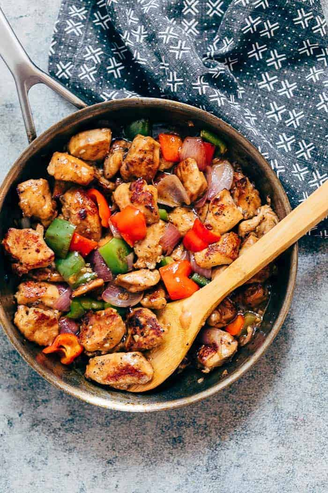

Chicken and Peppers

The Slay Chicken and Pepper Recipe
With the new release of the Slay App came receipes including this one for a Chicken
and Pepper dish. This eleven ingredient recipe is easy and pretty quick to make.
As well as being easy, it tastes delicious. To make this recipe even easier,
take some time before you start to prep your ingredients. Below are some easy to
follow instructions.
Ingredients:
- 4 Chicken Breasts
- 2 Bell Peppers, chopped
- 2 Cloves Garlic, chopped
- 1 Can Diced Tomatoes
- 1/2 Cup White Wine (pinot grigio)
- 1 Tbsp Fresh Thyme
- 1 tsp Fresh Oregano Leaves
- 1/3 Cup Fresh Parsley
- 1/2 Cup Chicken Stock
- 1 Tbsp Olive Oil
- 1 tsp Salt and Pepper (mixed)
Instructions:
- Season chick with salt and pepper.
- In a large skillet, heat olive oil over medium heat. Add Chicken
and brown on all sides. Then set aside.
- In the same skillet over medium heat, add peppers and garlic for
about 5 minutes or until browned.
- Add the white wine, tomoatoes, thyme, and oregano. Stir together for a minute.
- Add the chicken and chicken stock to the skillet and bring to a boil.
- Then, bring the entire skillet to a simmer and cover untils the chicken
is cooked through, about 25 minutes.
- Enjoy!